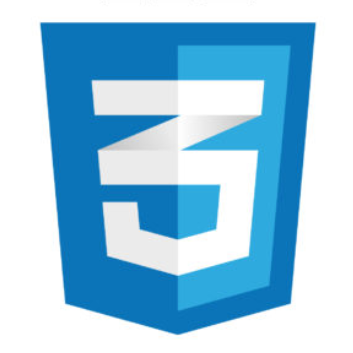
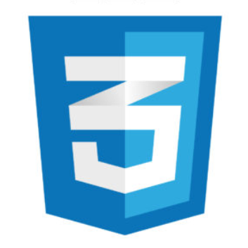

Recycle@Brown
Web Application Development - Front End


 

Table of Contents
Background
Goal
Process
Final Product
Background
Brown's Office of Sustainability wishes to divert 50% of the waste from landfill by 2020, since the landfill
both generates greenhouse gas and leachate that harms waterways.
One of the steps in doing so is to educate the community more about recycling- whether by informing them of
waste sorting spoits around campus, or types of trash that can be recycled.
I, along with 3 students, worked with the office to develop a mobile-focused web app to support their
mission. My work consisted of the front-end design & code.
Goal
After multiple meetings with the Office staff, we concluded a list of features the client wishes to have,
including:
1. Map that displays the recycling spots on campus so people will easily know where
and how to recycle.
2. Search bar for specific waste items to see if they are recyclable or not.
3. Database where the user can browse through all the recyclable items
alphabetically
Process
I first started with user interviews.
Our code architecture includes: React for frontend, Express for backend, and MongoDB for database.
Final Product
View source code here